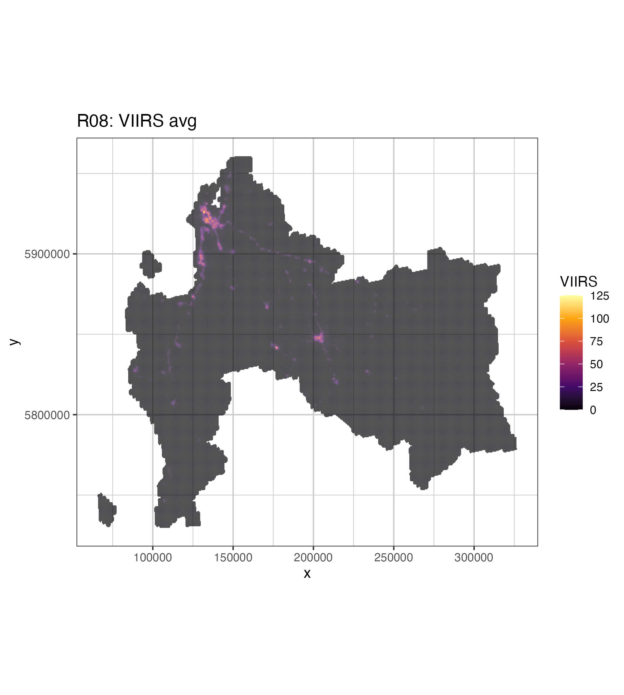

4 Luces Nocturnas
Datos Satelitales
4.1 Descripción General
Uno de los conjuntos de datos de observación de la Tierra más populares últimamente entre los economistas es el de las luces nocturnas. Los investigadores han hallado correlaciones positivas entre los datos de las luces nocturnas y diversas variables socioeconómicas en distintos países. En dos artículos, Ghosh et al. (2013) y Huang et al. (2014) citan ejemplos como el consumo de electricidad, el grado de electrificación, las emisiones de dióxido de carbono, el PIB, el PIB per cápita, la población urbana, la población total y la incidencia de la pobreza.
Considerando que varios estudios han demostrado que la producción de luz nocturna está estrechamente relacionada con la capacidad de generación de electricidad y la actividad económica a escala regional y nacional Elvidge et al. (1997).
Considerando lo anterior se utilizará el producto satelital VIIRS Stray Light Corrected Nighttime Day/Night Band Composites Version 1 del año 2016, y se fitrará espacialmente por la región del Bío Bío.
4.2 Producto Satelital
El producto satelital VIIRS Stray Light Corrected Nighttime Day/Night Band Composites Version 1, se encuentra disponible de 2014-01-01 hasta 2023-01-01 con una periodicidad mensual, con una resolución espacial de 463.83 metros, cuyo proveedor es el Earth Observation Group, Payne Institute for Public Policy, Colorado School of Mines. El producto satelital esta corresponde a imágenes compuestas de radiancia media mensual utilizando datos nocturnos del Visible Infrared Imaging Radiometer Suite (VIIRS) Day/Night Band (DNB).
4.3 Resultados
El procedimiento detallado de adquisión y transformación de ester producto satelital, está registrado en Appendix A, mientras que sus resultados se observan en Figure 4.1 .
